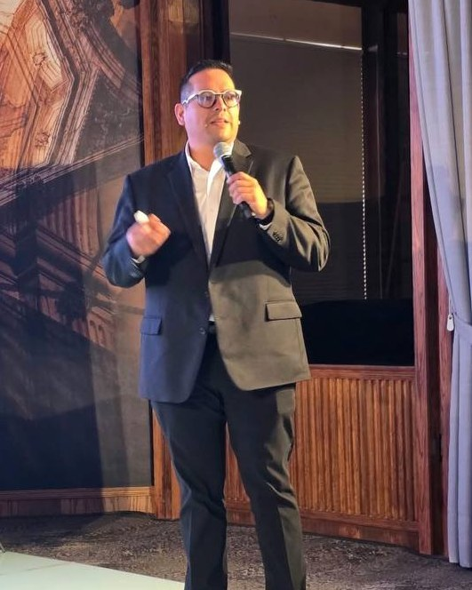
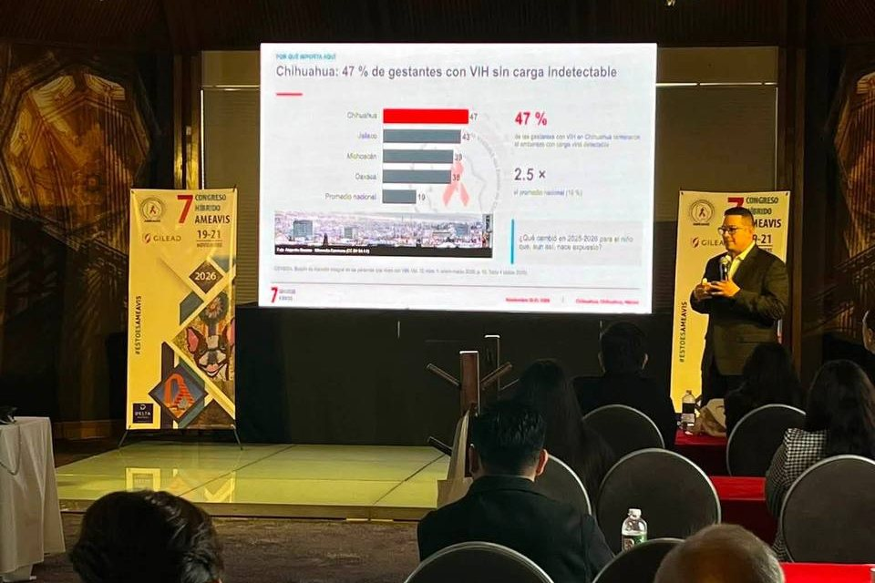
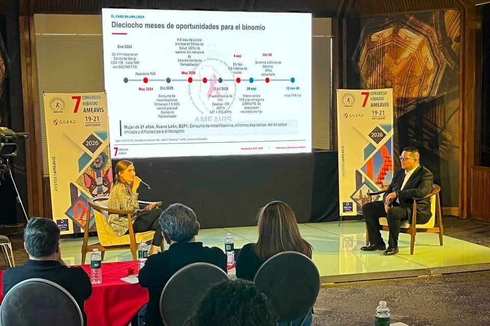
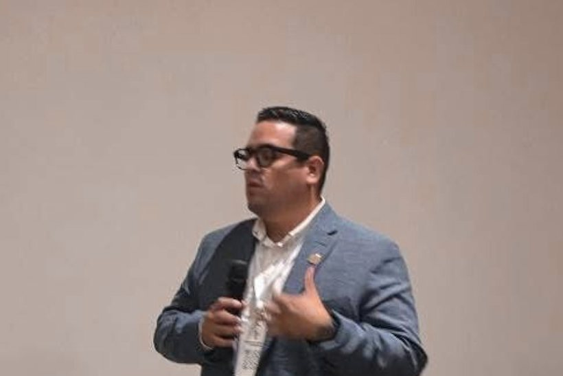
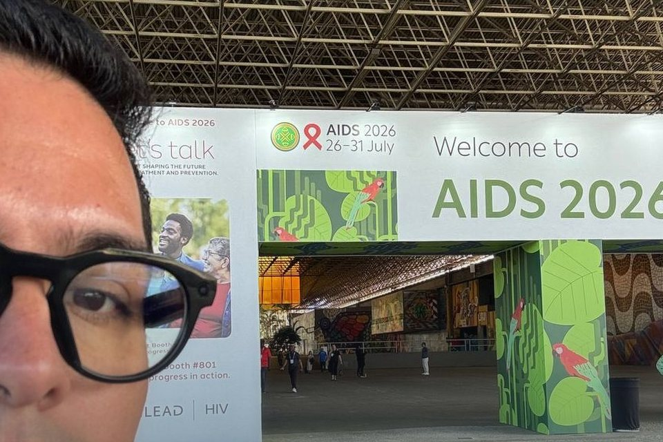
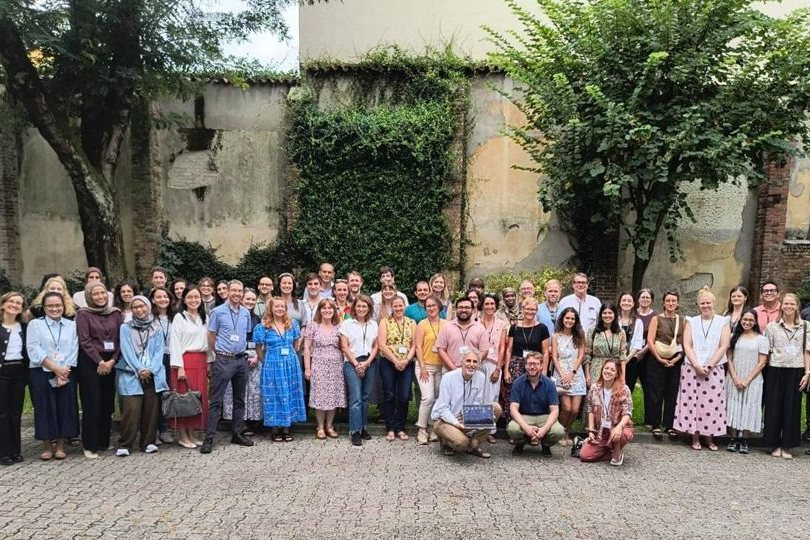
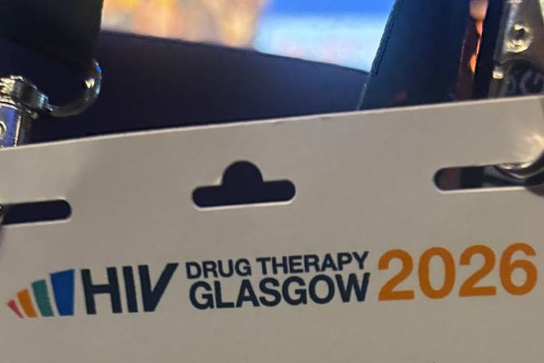

Brain abscess caused by Bifidobacterium spp. in a previously healthy adolescent: a case report.
Castro-Pérez A, Minero-Hibert MA, Gómez-Ponce CA.
Anaerobe 2026.
DOI 10.1016/j.anaerobe.2026.103090 ↗Infectología · Pediatría · Salud Pública
Médico infectólogo y pediatra certificado, investigador clínico y docente universitario en la frontera México–Estados Unidos (Ciudad Juárez).

Semblanza para congresos
Lista para programas de congresos y comités científicos.
El Dr. Carlos Augusto Gómez Ponce es médico infectólogo y pediatra certificado con más de nueve años de liderazgo clínico, académico y en salud pública en la frontera norte de México (Ciudad Juárez, Chihuahua). Es responsable clínico de la cohorte de atención de VIH (~980 pacientes) en el Hospital General de Zona No. 35 del IMSS, infectólogo pediatra interconsultante en el Hospital de la Mujer y en el Hospital Infantil de Especialidades (donde codirige los Comités de Optimización de Antimicrobianos y participa en Prevención de Infecciones), y profesor de asignatura de Infectología en la Universidad Autónoma de Ciudad Juárez (UACJ).
Egresado de Medicina por la Benemérita Universidad Autónoma de Puebla (BUAP), realizó la especialidad en Pediatría en la Universidad Autónoma de Chihuahua y la subespecialidad en Infectología por la UNAM en el Hospital Infantil de México Federico Gómez. Cuenta además con una Maestría en Liderazgo para la Salud Pública por la Universidad Anáhuac y formación avanzada en VIH pediátrico por la Fondazione Penta (PentaTr@ining 2026, Padua, Italia). Sus líneas de trabajo incluyen cascadas de atención en VIH, prevención de transmisión vertical de VIH y sífilis congénita, eliminación de hepatitis virales, programas de optimización de antimicrobianos (PROA) en entornos de recursos limitados y enfermedades infecciosas emergentes en contextos migratorios.
Kit para organizadores






Investigación
Brain abscess caused by Bifidobacterium spp. in a previously healthy adolescent: a case report.
Castro-Pérez A, Minero-Hibert MA, Gómez-Ponce CA.
Anaerobe 2026.
DOI 10.1016/j.anaerobe.2026.103090 ↗Emerging infectious diseases and migration: a case of leishmaniasis in northern Mexico.
Gómez-Ponce CA, Pérez-Barragán E, Méndez-Palacios DM, Ramírez-Romero KO, Pérez-Cavazos S.
Lancet Infect Dis 2023;23(6):648–650.
DOI 10.1016/S1473-3099(23)00197-4 ↗Implementing hand hygiene programs in hospitals with limited resources.
De la Rosa-Zamboni D, Laris-González A, Gómez-Ponce CA, Jiménez-Juárez RN, de la Garza-López AE.
Curr Treat Options Infect Dis 2017;9(2):129–141.
DOI 10.1007/s40506-017-0115-y ↗Disseminated penicilliosis due to Penicillium chrysogenum in a pediatric patient with Henoch-Schönlein syndrome.
Avilés-Robles M, Gómez-Ponce C, Reséndiz-Sánchez J, et al.
Int J Infect Dis 2016;51:78–80.
DOI 10.1016/j.ijid.2016.08.026 ↗Diagnóstico, vinculación, retención y supresión viral en una cohorte de ~980 pacientes.
Vigilancia epidemiológica y prevención de la transmisión vertical en Ciudad Juárez.
Efectividad y seguridad de sofosbuvir/velpatasvir en hepatitis C crónica.
Trayectoria
Contacto
Para invitaciones a congresos, comités científicos, consejos asesores y colaboración académica.
Guardar contacto en mi teléfono ↓